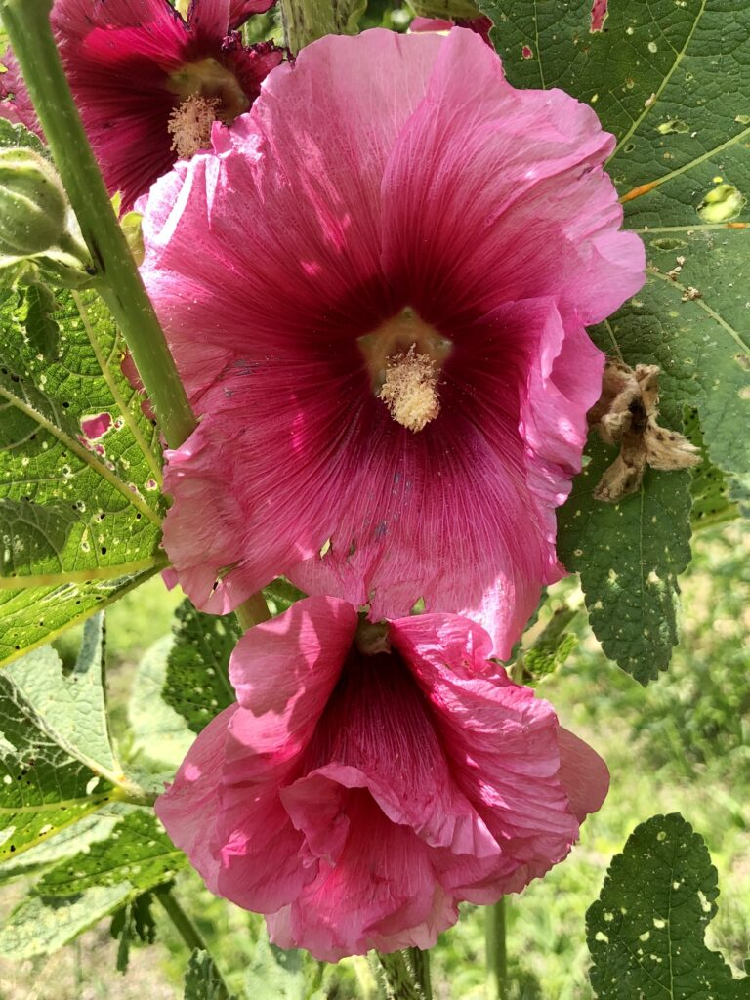

Malvone: uso tradizionale, proprietà e avvertenze
Alcea rosea

Nel catalogo storico di Gardoni la pianta compare come erba emolliente e da tosse; le indicazioni sono storiche e non verificate.
Proprietà attribuite dalla tradizione
- Uso tradizionaleNelle note storiche di Gardoni (Alcea rosea), i fiori sono usati in decotto o cataplasma come emollienti (Gardoni 2020)
- Uso tradizionaleNelle note storiche di Gardoni, i fiori sono indicati come espettoranti e sedativi della tosse (Gardoni 2020)
- Uso tradizionaleIl contenuto di mucillagine della pianta è descritto nel catalogo storico di Gardoni (Gardoni 2020)
- Uso tradizionaleNelle medicine ayurvedica, unani e tradizionale cinese la pianta è usata per tosse, mal di gola, bronchite e disturbi digestivi e della pelle (Akbar Ali et al. 2025).
- Evidenza preliminareIn laboratorio, estratti di Alcea rosea hanno ridotto l'espressione di COX-2 e NF-κB e hanno ucciso cellule di tumore del colon; nei topi hanno ridotto l'edema indotto da LPS nella zampa (Parry 2025). Sono studi su cellule e animali, non sull'uomo.
Uso tradizionale
Il catalogo storico di Gardoni (Gardoni 2020) riporta per Alcea rosea un uso dei fiori in decotto e cataplasma come emollienti, e come espettoranti e sedanti della tosse, e per le infiammazioni delle tonsille. Sono indicazioni storiche di un erbario ottocentesco, non verificate da studi moderni. Una revisione del 2025 (Akbar Ali et al.) riporta usi simili nelle medicine ayurvedica, unani e tradizionale cinese, ma nelle fonti lette non ci sono studi clinici che li confermino.
Avvertenze e controindicazioni
Le fonti consultate non riportano controindicazioni note né effetti avversi. Il manuale botanico AHPA (2013, voce per la radice) non trova studi di tossicità né dati su gravidanza e allattamento. La mucillagine può rallentare l'assorbimento di altri farmaci per bocca: assumerli circa un'ora prima o diverse ore dopo. Uno studio del 2025 ha valutato la sicurezza sistemica di un estratto di fiore per uso cosmetico con l'approccio della soglia di tossicità: è una valutazione per la pelle, non per l'assunzione per bocca. È consigliato consultare il medico in caso di tosse persistente o di mal di gola ricorrente. Avvertenza sulla preparazione: alimento, infuso, estratto e olio essenziale non sono equivalenti, e le indicazioni di sicurezza di una preparazione non valgono automaticamente per le altre.
Fonti
- Akbar Ali N. et al., The Cottage Rose (Alcea rosea): review, Asian J Res Pharm Sci 2025; vol. 15.
- Parry R.A. et al., Anti-inflammatory and anticancer properties of Alcea rosea extracts: insights from in vitro and in vivo studies, Front Pharmacol 2025; 16:1595604.
- McGuffin M. et al., American Herbal Products Association's Botanical Safety Handbook, 2a ed., CRC Press 2013 (voce Alcea rosea).
- Cosmetics 2025; 12:133, Assessment of Systemic Safety of Althaea rosea Flower Extract for Use in Cosmetics: Threshold of Toxicological Concern and History of Safe Consumption Approaches.